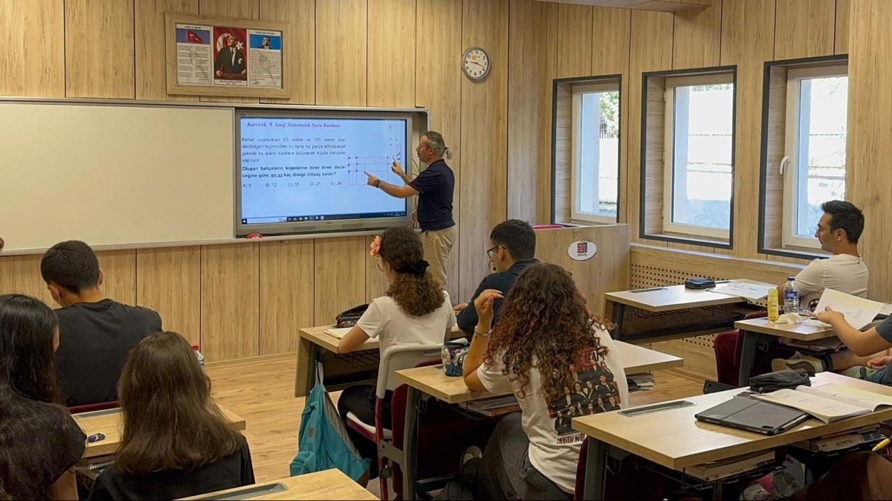
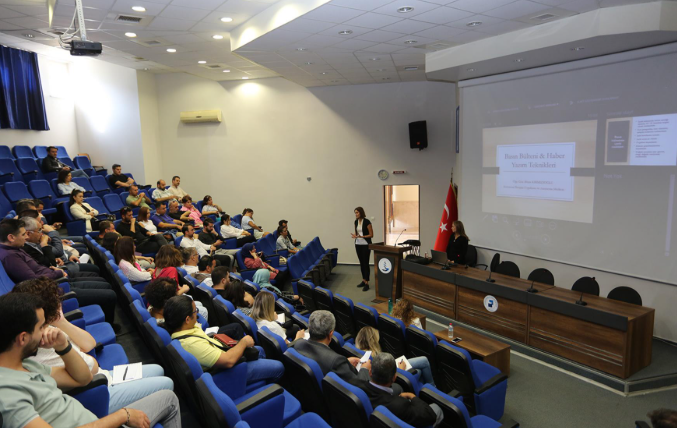

YKS Hazırlık & Profesyonel Koçluk
Küçükçekmece Gençlik Merkezi'nde sadece ders anlatmıyoruz; her öğrencimizi birebir takip eden profesyonel rehberlik ve dershane disipliniyle geleceğe hazırlıyoruz.
Butik Sınıf Yapısı
Az mevcutlu sınıflarda öğretmenle birebir iletişim imkanı.
Zengin Yayın Desteği
Yeni nesil sorulardan oluşan kapsamlı döküman ve kaynak havuzu.
Ödev ve Takip Sistemi
Günlük ödev kontrolü ve haftalık kazanım değerlendirme testleri.
Yoğunlaştırılmış Program
Sınav yaklaştıkça artan kamp programları ve soru çözüm saatleri.
Eğitim Koçluğu Süreç Yönetimi
Öğrencilerimiz üniversite sınavı gibi uzun soluklu bir maratonda yalnız değildir. Profesyonel eğitim koçlarımız, her öğrencinin öğrenme stilini analiz ederek onlara en uygun çalışma metodolojisini kazandırır.
Profesyonel Rehberlik Servisi
Uzman rehberlik hocalarımız eşliğinde sunulan kurumsal desteklerimiz:
- Bireysel Kariyer ve Hedef Planlama
- Sınav Kaygısı ve Stres Yönetimi Desteği
- Mesleki Yönelim Envanterleri ve Analizler
- Tercih Dönemi Profesyonel Danışmanlık


Akademik Müfredat
TYT ve AYT konularının eksiksiz tamamlandığı, konu anlatımı ve soru çözümü dengeli ders programı.
SBS & Seviye Grupları
Ön Kayıt Seviye Belirleme Sınavı (SBS) ile homojen sınıflar oluşturularak her öğrenciye kendi hızında eğitim verilir.

Gelişim Seminerleri
Süreç yönetimi, etkili ders çalışma teknikleri ve motivasyon odaklı uzman buluşmaları.
Sınav Ücreti ve Tercih Desteği
Küçükçekmece Belediyesi olarak, bünyemizde hazırlanan öğrencilerimizin ÖSYM sınav başvuru ücretlerine destek oluyor, sınav sonrası tercih merkezlerimizde yanlarında olmaya devam ediyoruz.